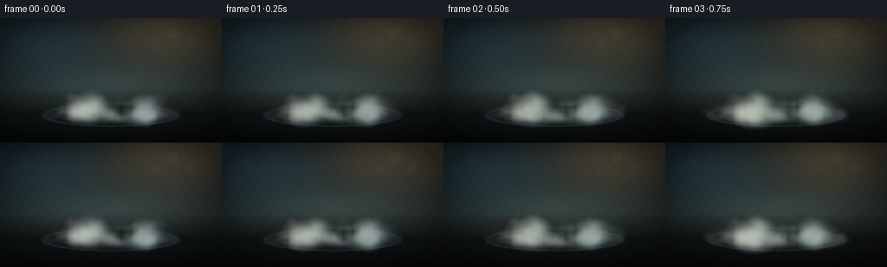
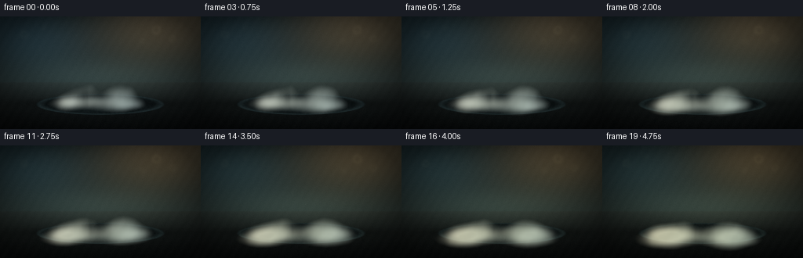
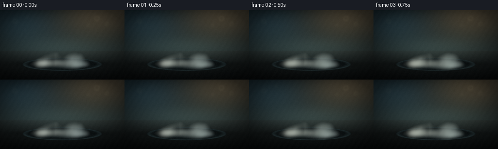
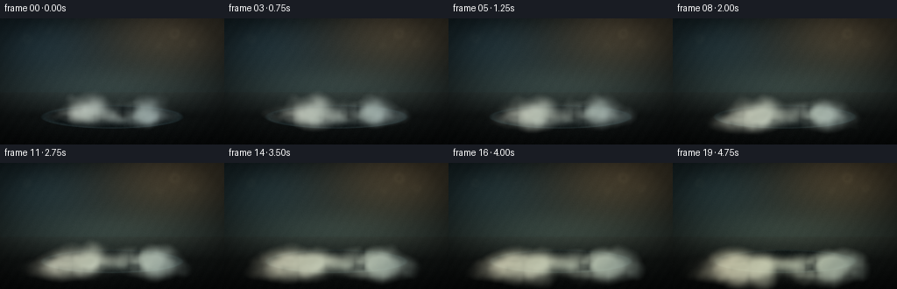
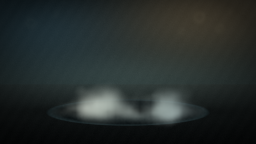
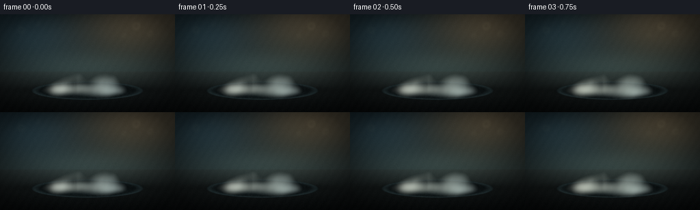
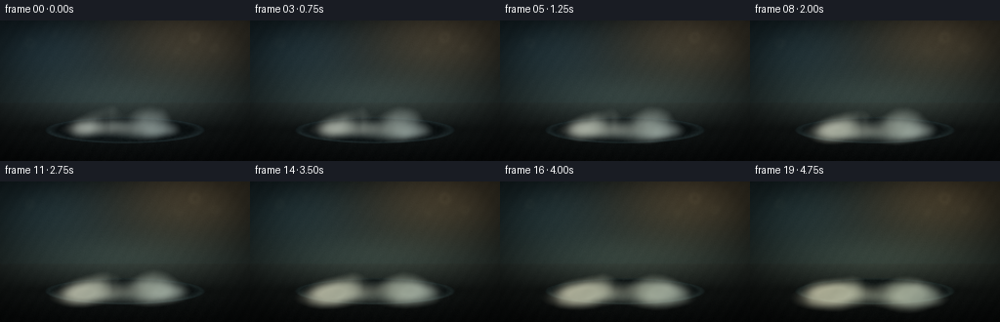
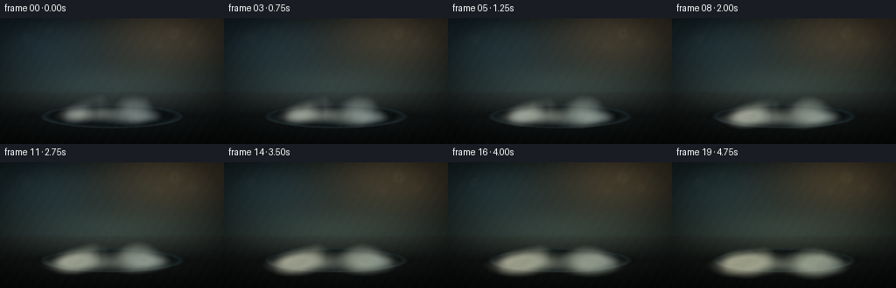

CODING AGENTS AS PIXEL WORLD MODELS
traex/DeepSeek-V4.1-Flash · phygen_116
点击播放 · 原生 RGB 像素
逐轮保存的候选
回放视频、检查图与代码变化。
每份候选均可单独播放。实际图片检查记录在下方工具轨迹中。
候选 01播放与检查图
点击播放 · 原生 RGB 像素


展开代码变化
--- 上一保存版本
+++ 本次保存版本
@@ -0,0 +1,393 @@
+from pathlib import Path
+
+import cv2
+import numpy as np
+from PIL import Image
+from scipy.ndimage import gaussian_filter, map_coordinates
+
+import artifact_io
+
+
+CASE_DIR = Path(__file__).resolve().parent
+OUT_W, OUT_H = 256, 144
+N_FRAMES, FPS = 20, 4.0
+SS = 3
+W, H = OUT_W * SS, OUT_H * SS
+
+
+def normalize(vector):
+ return vector / np.linalg.norm(vector)
+
+
+def smoothstep(edge0, edge1, value):
+ value = np.clip((value - edge0) / (edge1 - edge0), 0.0, 1.0)
+ return value * value * (3.0 - 2.0 * value)
+
+
+def make_noise_volume(shape, sigma, rng):
+ volume = rng.normal(size=shape).astype(np.float32)
+ volume = gaussian_filter(volume, sigma=sigma, mode="wrap")
+ volume -= volume.mean()
+ volume /= volume.std() + 1e-6
+ return volume
+
+
+def sample_volume(volume, points, scale, offset):
+ coords = np.stack(
+ (
+ (points[:, 2] * scale + offset[2]) % volume.shape[2],
+ (points[:, 1] * scale + offset[1]) % volume.shape[1],
+ (points[:, 0] * scale + offset[0]) % volume.shape[0],
+ )
+ )
+ return map_coordinates(volume, coords, order=1, mode="wrap").astype(np.float32)
+
+
+def make_background(yy, xx, rng):
+ yn = yy / (H - 1)
+ xn = xx / (W - 1)
+ horizon = 0.585
+
+ wall_t = np.clip(yn / horizon, 0.0, 1.0)[..., None]
+ wall_top = np.array([0.028, 0.052, 0.059], dtype=np.float32)
+ wall_bottom = np.array([0.095, 0.130, 0.132], dtype=np.float32)
+ wall = wall_top * (1.0 - wall_t) + wall_bottom * wall_t
+
+ floor_t = np.clip((yn - horizon) / (1.0 - horizon), 0.0, 1.0)[..., None]
+ floor_near = np.array([0.022, 0.030, 0.032], dtype=np.float32)
+ floor_far = np.array([0.092, 0.114, 0.113], dtype=np.float32)
+ floor = floor_far * (1.0 - floor_t) + floor_near * floor_t
+ image = np.where((yn < horizon)[..., None], wall, floor)
+
+ def glow(cx, cy, sx, sy, color, strength):
+ field = np.exp(-0.5 * (((xn - cx) / sx) ** 2 + ((yn - cy) / sy) ** 2))
+ return field[..., None] * np.asarray(color, dtype=np.float32) * strength
+
+ image += glow(0.80, 0.10, 0.25, 0.22, (0.54, 0.42, 0.28), 0.46)
+ image += glow(0.16, 0.18, 0.22, 0.20, (0.21, 0.35, 0.43), 0.36)
+ image += glow(0.50, 0.55, 0.34, 0.13, (0.34, 0.43, 0.41), 0.23)
+
+ bokeh = np.zeros((H, W), dtype=np.float32)
+ bokeh_specs = [
+ (0.78, 0.12, 0.031, 0.16),
+ (0.86, 0.20, 0.024, 0.12),
+ (0.71, 0.22, 0.018, 0.10),
+ (0.12, 0.16, 0.026, 0.11),
+ (0.22, 0.10, 0.015, 0.08),
+ (0.90, 0.08, 0.014, 0.08),
+ ]
+ for bx, by, radius, opacity in bokeh_specs:
+ dist = np.sqrt(((xn - bx) * W / H) ** 2 + (yn - by) ** 2)
+ ring = np.clip(1.0 - np.abs(dist - radius) / (radius * 0.58), 0.0, 1.0)
+ bokeh += opacity * ring * ring
+ bokeh = gaussian_filter(bokeh, 5.0)
+ image += bokeh[..., None] * np.array([0.48, 0.45, 0.34], dtype=np.float32)
+
+ grain = rng.normal(size=(H // 2, W // 2)).astype(np.float32)
+ grain = cv2.resize(grain, (W, H), interpolation=cv2.INTER_CUBIC)
+ image += grain[..., None] * 0.005
+
+ vignette = np.clip(1.0 - 0.35 * ((xn - 0.5) ** 2 / 0.25 + (yn - 0.52) ** 2 / 0.36), 0.55, 1.0)
+ image *= vignette[..., None]
+ return np.clip(image, 0.0, 1.0)
+
+
+def rounded_box_sdf(points, half_size, radius):
+ q = np.abs(points) - half_size + radius
+ outside = np.linalg.norm(np.maximum(q, 0.0), axis=1)
+ inside = np.minimum(np.max(q, axis=1), 0.0)
+ return outside + inside - radius
+
+
+def render_block(rays_o, rays_d, time_t, noise_coarse, noise_fine, floor_y):
+ shrink = 1.0 - 0.25 * (time_t ** 0.78)
+ half_size = np.array([0.83 * shrink, 0.385 * shrink, 0.45 * shrink], dtype=np.float32)
+ radius = 0.022 + 0.055 * time_t
+ center = np.array([0.0, floor_y + half_size[1] + 0.002, 0.0], dtype=np.float32)
+
+ rel = center[None, :] - rays_o[None, :]
+ closest_t = np.sum(rel * rays_d, axis=1)
+ closest = rays_o[None, :] + closest_t[:, None] * rays_d
+ candidate = np.linalg.norm(closest - center[None, :], axis=1) < 1.16
+ indices = np.flatnonzero(candidate)
+
+ local_dirs = rays_d[indices]
+ march_t = np.full(indices.size, 1.18, dtype=np.float32)
+ hit = np.zeros(indices.size, dtype=bool)
+ for _ in range(72):
+ points = rays_o[indices] + march_t[:, None] * local_dirs
+ distances = rounded_box_sdf(points - center[None, :], half_size, radius)
+ active = (distances > 0.00055) & (march_t < 3.9) & ~hit
+ hit |= distances <= 0.00065
+ if not np.any(active):
+ break
+ march_t[active] += np.maximum(distances[active] * 0.82, 0.0007)
+ march_t[~active & ~hit] += 0.0015
+
+ hit_indices = indices[hit]
+ hit_t = march_t[hit]
+ if hit_indices.size == 0:
+ return np.zeros((H, W, 3), dtype=np.float32), np.zeros((H, W), dtype=np.float32), np.zeros((H, W), dtype=np.float32)
+
+ points = rays_o[None, :] + hit_t[:, None] * rays_d[hit_indices]
+ eps = 0.0018
+ normal = np.empty_like(points)
+ for axis in range(3):
+ delta = np.zeros(3, dtype=np.float32)
+ delta[axis] = eps
+ normal[:, axis] = rounded_box_sdf(points + delta - center, half_size, radius) - rounded_box_sdf(points - delta - center, half_size, radius)
+ normal /= np.linalg.norm(normal, axis=1, keepdims=True) + 1e-7
+
+ view = normalize(rays_o - points.mean(axis=0))
+ view_dirs = rays_o[None, :] - points
+ view_dirs /= np.linalg.norm(view_dirs, axis=1, keepdims=True) + 1e-7
+
+ key_dir = normalize(np.array([-0.58, 0.86, 0.54], dtype=np.float32))
+ fill_dir = normalize(np.array([0.76, 0.20, 0.52], dtype=np.float32))
+ rim_dir = normalize(np.array([0.15, 0.50, -0.82], dtype=np.float32))
+ diffuse_key = np.clip(normal @ key_dir, 0.0, 1.0)
+ diffuse_fill = np.clip(normal @ fill_dir, 0.0, 1.0)
+ diffuse_rim = np.clip(normal @ rim_dir, 0.0, 1.0)
+
+ coarse = sample_volume(noise_coarse, points - center, 2.4, (7.3, 12.1, 4.7))
+ fine = sample_volume(noise_fine, points - center, 12.0, (1.7, 6.4, 9.8))
+ frost = np.clip(0.84 + 0.12 * coarse + 0.055 * fine, 0.62, 1.08)
+ albedo = np.array([0.78, 0.845, 0.895], dtype=np.float32)[None, :] * frost[:, None]
+ albedo[:, 2] += 0.025 * np.clip(normal[:, 1], 0.0, 1.0)
+
+ sky = np.array([0.30, 0.39, 0.44], dtype=np.float32)
+ ground = np.array([0.12, 0.145, 0.15], dtype=np.float32)
+ ambient = sky[None, :] * (0.55 + 0.45 * np.clip(normal[:, 1], 0.0, 1.0))[:, None]
+ ambient += ground[None, :] * (0.35 * np.clip(-normal[:, 1], 0.0, 1.0))[:, None]
+ light = ambient
+ light += (diffuse_key * 1.05)[:, None] * np.array([1.00, 0.91, 0.79], dtype=np.float32)[None, :]
+ light += (diffuse_fill * 0.50)[:, None] * np.array([0.42, 0.65, 0.86], dtype=np.float32)[None, :]
+ light += (diffuse_rim * 0.43)[:, None] * np.array([0.52, 0.74, 0.94], dtype=np.float32)[None, :]
+
+ half_key = normalize(key_dir + view)
+ specular = np.clip(normal @ half_key, 0.0, 1.0) ** 42.0
+ fresnel = 0.05 + 0.95 * (1.0 - np.clip(np.sum(normal * view_dirs, axis=1), 0.0, 1.0)) ** 4
+ specular = specular * (0.25 + 0.75 * fresnel) * 0.42
+ rim_glow = np.clip(1.0 - np.abs(normal @ view_dirs), 0.0, 1.0) ** 3
+ color = albedo * light + specular[:, None] * np.array([1.0, 0.97, 0.91], dtype=np.float32)
+ color += rim_glow[:, None] * np.array([0.08, 0.13, 0.16], dtype=np.float32)
+
+ contact_ao = np.clip((points[:, 1] - floor_y) / 0.10, 0.0, 1.0)
+ color *= (0.64 + 0.36 * contact_ao)[:, None]
+ color = 1.0 - np.exp(-color * 1.55)
+ color = np.clip(color, 0.0, 1.0)
+
+ rgb = np.zeros((H, W, 3), dtype=np.float32)
+ alpha = np.zeros((H, W), dtype=np.float32)
+ depth = np.zeros((H, W), dtype=np.float32)
+ ys, xs = np.divmod(hit_indices, W)
+ rgb[ys, xs] = color
+ alpha[ys, xs] = 1.0
+ depth[ys, xs] = hit_t
+ return rgb, alpha, depth
+
+
+def make_platter(base, contact_y, rng):
+ yy, xx = np.mgrid[0:H, 0:W].astype(np.float32)
+ xn = xx / (W - 1)
+ yn = yy / (H - 1)
+ cx, cy = 0.5, contact_y / H + 0.008
+ rx, ry = 0.325, 0.095
+ q = ((xn - cx) / rx) ** 2 + ((yn - cy) / ry) ** 2
+ inside = np.clip(1.0 - q, 0.0, 1.0)
+ plate_alpha = smoothstep(0.0, 0.08, inside)
+
+ plate_color = np.array([0.035, 0.051, 0.055], dtype=np.float32)[None, None, :]
+ plate_color = np.broadcast_to(plate_color, (H, W, 3)).copy()
+ plate_color += (0.065 * np.exp(-q * 1.2))[..., None] * np.array([0.45, 0.72, 0.78], dtype=np.float32)
+ edge = np.clip(1.0 - np.abs(q - 0.88) / 0.20, 0.0, 1.0)
+ plate_color += (0.11 * edge)[..., None] * np.array([0.57, 0.80, 0.84], dtype=np.float32)
+ micro = rng.normal(size=(H // 4, W // 4)).astype(np.float32)
+ micro = cv2.resize(micro, (W, H), interpolation=cv2.INTER_CUBIC)
+ plate_color += micro[..., None] * 0.006
+ plate_color = np.clip(plate_color, 0.0, 1.0)
+ result = base * (1.0 - plate_alpha[..., None] * 0.91) + plate_color * (plate_alpha[..., None] * 0.91)
+
+ shadow = np.exp(-0.5 * (((xn - 0.5) / 0.24) ** 2 + ((yn - contact_y / H) / 0.026) ** 2))
+ result *= (1.0 - 0.58 * shadow[..., None])
+ return result
+
+
+def add_reflection(image, block_rgb, block_alpha, contact_y, t):
+ alpha = gaussian_filter(block_alpha, 3.0)
+ ys, xs = np.nonzero(alpha > 0.02)
+ if ys.size == 0:
+ return image
+ top = max(0, int(ys.min()))
+ bottom = min(H - 1, int(contact_y))
+ if bottom <= top:
+ return image
+ reflected = block_rgb[top:bottom + 1][::-1]
+ reflected_alpha = alpha[top:bottom + 1][::-1]
+ out_h = bottom - top + 1
+ target_y0 = bottom + 1
+ target_y1 = min(H, target_y0 + int(out_h * 1.12))
+ if target_y1 <= target_y0:
+ return image
+ scale = (target_y1 - target_y0) / out_h
+ reflected = cv2.resize(reflected, (W, target_y1 - target_y0), interpolation=cv2.INTER_LINEAR)
+ reflected_alpha = cv2.resize(reflected_alpha, (W, target_y1 - target_y0), interpolation=cv2.INTER_LINEAR)
+ reflected = gaussian_filter(reflected, (4.5, 2.0, 0.0))
+ reflected_alpha = gaussian_filter(reflected_alpha, 5.0) * (0.15 - 0.03 * t)
+ reflected *= np.array([0.72, 0.84, 0.88], dtype=np.float32)
+ image[target_y0:target_y1] = image[target_y0:target_y1] * (1.0 - reflected_alpha[..., None]) + reflected * reflected_alpha[..., None]
+ return image
+
+
+def make_fog_density(t, contact_y, frame_index, rng, coarse2d, fine2d):
+ yy, xx = np.mgrid[0:H, 0:W].astype(np.float32)
+ cx = 0.5 * W
+ density = np.zeros((H, W), dtype=np.float32)
+
+ base_puffs = []
+ for i in range(22):
+ side = -1.0 if i % 2 else 1.0
+ rank = i // 2
+ x0 = cx + side * (28 + rank * 15.5 + rng.uniform(-16, 16))
+ y0 = contact_y - 4 + rng.uniform(-12, 10)
+ base_puffs.append((x0, y0, rng.uniform(24, 48), rng.uniform(10, 23), rng.uniform(0.22, 0.45), side))
+ for x0, y0, sx, sy, weight, side in base_puffs:
+ px = x0 + side * (10 + 38 * t) + 7 * np.sin(1.6 * t * 6.0 + x0 * 0.021)
+ py = y0 + 20 * t + 5 * np.sin(1.3 * t * 6.0 + x0 * 0.017)
+ sx_t = sx * (1.0 + 0.45 * t)
+ sy_t = sy * (1.0 + 0.25 * t)
+ density += weight * np.exp(-0.5 * (((xx - px) / sx_t) ** 2 + ((yy - py) / sy_t) ** 2))
+
+ front_puffs = []
+ for i in range(15):
+ side = -1.0 if i % 2 else 1.0
+ rank = i // 2
+ x0 = cx + side * (20 + rank * 18 + rng.uniform(-14, 14))
+ y0 = contact_y - 50 + rng.uniform(-16, 20)
+ front_puffs.append((x0, y0, rng.uniform(17, 34), rng.uniform(15, 30), rng.uniform(0.16, 0.36), side))
+ for x0, y0, sx, sy, weight, side in front_puffs:
+ px = x0 + side * (18 + 25 * t)
+ py = y0 + (48 + 35 * t) * t + 4 * np.sin(x0 * 0.02 + t * 8.0)
+ density += weight * np.exp(-0.5 * (((xx - px) / (sx * (1.0 + 0.28 * t))) ** 2 + ((yy - py) / (sy * (1.0 + 0.35 * t))) ** 2))
+
+ tendril_strength = smoothstep(0.12, 0.82, t)
+ for side in (-1.0, 1.0):
+ for rank in range(5):
+ px = cx + side * (95 + rank * 31 + 50 * t)
+ py = contact_y + 15 + rank * 5 + 22 * t
+ sx = 38 + rank * 8
+ sy = 11 + rank * 2
+ density += 0.16 * tendril_strength * np.exp(-0.5 * (((xx - px) / sx) ** 2 + ((yy - py) / sy) ** 2))
+
+ envelope_y = np.exp(-0.5 * ((yy - (contact_y + 12)) / 62.0) ** 2)
+ envelope_x = np.exp(-0.5 * ((xx - cx) / (150 + 70 * t)) ** 8)
+ density *= 0.35 + 0.65 * envelope_x * envelope_y
+
+ xn = xx / W
+ yn = yy / H
+ drift_x = 11.0 * t * 6.0
+ drift_y = 17.0 * t * 6.0
+ n1 = map_coordinates(coarse2d, [(yy + drift_y) * 0.013, (xx + drift_x) * 0.011], order=1, mode="wrap")
+ n2 = map_coordinates(fine2d, [(yy - drift_y * 0.35) * 0.036, (xx - drift_x * 0.55) * 0.031], order=1, mode="wrap")
+ n3 = map_coordinates(fine2d, [(yy + 9.0) * 0.078, (xx - 13.0) * 0.069], order=1, mode="wrap")
+ texture = np.clip(0.62 + 0.32 * n1 + 0.13 * n2 + 0.055 * n3, 0.06, 1.30)
+ density *= texture
+ density *= 0.92 + 0.20 * smoothstep(0.0, 1.0, t)
+ density = gaussian_filter(density, 1.2)
+ alpha = 1.0 - np.exp(-np.maximum(density - 0.035, 0.0) * 1.95)
+ alpha *= smoothstep(0.0, 0.10, t * 0.22 + 0.03 + 0.07 * np.exp(-0.5 * ((yy - contact_y) / 65.0) ** 2))
+ return np.clip(alpha, 0.0, 0.90)
+
+
+def shade_fog(alpha, t, contact_y, rng):
+ yy, xx = np.mgrid[0:H, 0:W].astype(np.float32)
+ xn = xx / (W - 1)
+ yn = yy / (H - 1)
+ key = np.clip(0.95 - 0.68 * xn + 0.16 * (1.0 - yn), 0.0, 1.0)
+ cool = np.array([0.42, 0.58, 0.66], dtype=np.float32)
+ warm = np.array([0.93, 0.91, 0.84], dtype=np.float32)
+ color = cool[None, None, :] * (1.0 - key[..., None]) + warm[None, None, :] * key[..., None]
+ glow = np.exp(-0.5 * (((xx - 0.48 * W) / (0.22 * W)) ** 2 + ((yy - (contact_y - 5)) / (0.16 * H)) ** 2))
+ color += glow[..., None] * np.array([0.10, 0.12, 0.10], dtype=np.float32)
+ color += 0.025 * np.sin((xx * 0.04 + yy * 0.07) + t * 2.0)[..., None]
+ color = np.clip(color, 0.0, 1.0)
+ return color
+
+
+def render_frame(frame_index, coarse3d, fine3d, noise2d, rays_o, rays_d):
+ t = frame_index / (N_FRAMES - 1)
+ rng = np.random.default_rng(1000 + frame_index)
+ yy, xx = np.mgrid[0:H, 0:W].astype(np.float32)
+ base = make_background(yy, xx, rng)
+ floor_y = -0.405
+ contact_y = int(0.775 * H)
+ image = make_platter(base, contact_y, rng)
+
+ block_rgb, block_alpha, _ = render_block(rays_o, rays_d, t, coarse3d, fine3d, floor_y)
+ image = add_reflection(image, block_rgb, block_alpha, contact_y, t)
+
+ back_alpha = make_fog_density(t, contact_y, frame_index, rng, noise2d[0], noise2d[1]) * 0.34
+ back_color = shade_fog(back_alpha, t, contact_y, rng)
+ image = image * (1.0 - back_alpha[..., None]) + back_color * back_alpha[..., None]
+
+ image = image * (1.0 - block_alpha[..., None]) + block_rgb * block_alpha[..., None]
+
+ front_alpha = make_fog_density(t, contact_y, frame_index, rng, noise2d[0], noise2d[1]) * 0.76
+ front_color = shade_fog(front_alpha, t, contact_y, rng)
+ image = image * (1.0 - front_alpha[..., None]) + front_color * front_alpha[..., None]
+
+ cool_fade = 1.0 - 0.10 * t
+ image[..., 2] *= cool_fade
+ image[..., 0] *= 1.0 + 0.04 * t
+ image += 0.0025 * np.sin((xx * 0.17 + yy * 0.11) + t * 5.0)[..., None]
+ image = np.clip(image, 0.0, 1.0)
+
+ out = cv2.resize(image, (OUT_W, OUT_H), interpolation=cv2.INTER_AREA)
+ out = np.clip(out, 0.0, 1.0)
+ out = (out ** (1.0 / 1.05) * 255.0 + 0.5).astype(np.uint8)
+ return out
+
+
+def main():
+ rng = np.random.default_rng(116)
+ coarse3d = make_noise_volume((42, 42, 42), 2.0, rng)
+ fine3d = make_noise_volume((64, 64, 64), 0.8, rng)
+ coarse2d = make_noise_volume((180, 240), 3.0, rng)
+ fine2d = make_noise_volume((180, 240), 0.7, rng)
+
+ cam_pos = np.array([0.0, 0.78, 3.08], dtype=np.float32)
+ target = np.array([0.0, 0.09, 0.0], dtype=np.float32)
+ forward = normalize(target - cam_pos)
+ right = normalize(np.cross(forward, np.array([0.0, 1.0, 0.0], dtype=np.float32)))
+ up = np.cross(right, forward)
+ aspect = W / H
+ tan_fov = np.tan(np.deg2rad(31.0) * 0.5)
+ yy, xx = np.mgrid[0:H, 0:W].astype(np.float32)
+ ndc_x = (xx / (W - 1) * 2.0 - 1.0) * aspect * tan_fov
+ ndc_y = (1.0 - yy / (H - 1) * 2.0) * tan_fov
+ dirs = forward[None, None, :] + right[None, None, :] * ndc_x[..., None] + up[None, None, :] * ndc_y[..., None]
+ dirs = dirs.reshape(-1, 3)
+ dirs /= np.linalg.norm(dirs, axis=1, keepdims=True)
+ origins = np.broadcast_to(cam_pos, dirs.shape)
+
+ frames = []
+ for index in range(N_FRAMES):
+ frames.append(render_frame(index, coarse3d, fine3d, (coarse2d, fine2d), origins, dirs))
+ print(f"rendered frame {index + 1:02d}/{N_FRAMES}")
+
+ frames = np.stack(frames).astype(np.uint8)
+ artifact_io.save(frames, CASE_DIR)
+
+ writer = cv2.VideoWriter(
+ str(CASE_DIR / "video.mp4"),
+ cv2.VideoWriter_fourcc(*"mp4v"),
+ FPS,
+ (OUT_W, OUT_H),
+ )
+ for frame in frames:
+ writer.write(cv2.cvtColor(frame, cv2.COLOR_RGB2BGR))
+ writer.release()
+
+
+if __name__ == "__main__":
+ main()
候选 02播放与检查图
点击播放 · 原生 RGB 像素

展开代码变化
--- 上一保存版本
+++ 本次保存版本
@@ -114,15 +114,15 @@
local_dirs = rays_d[indices]
march_t = np.full(indices.size, 1.18, dtype=np.float32)
hit = np.zeros(indices.size, dtype=bool)
- for _ in range(72):
+ for _ in range(100):
points = rays_o[indices] + march_t[:, None] * local_dirs
distances = rounded_box_sdf(points - center[None, :], half_size, radius)
active = (distances > 0.00055) & (march_t < 3.9) & ~hit
hit |= distances <= 0.00065
if not np.any(active):
break
- march_t[active] += np.maximum(distances[active] * 0.82, 0.0007)
- march_t[~active & ~hit] += 0.0015
+ march_t[active] += np.maximum(distances[active] * 0.74, 0.0005)
+ march_t[~active & ~hit] += 0.0010
hit_indices = indices[hit]
hit_t = march_t[hit]
@@ -151,9 +151,10 @@
coarse = sample_volume(noise_coarse, points - center, 2.4, (7.3, 12.1, 4.7))
fine = sample_volume(noise_fine, points - center, 12.0, (1.7, 6.4, 9.8))
- frost = np.clip(0.84 + 0.12 * coarse + 0.055 * fine, 0.62, 1.08)
- albedo = np.array([0.78, 0.845, 0.895], dtype=np.float32)[None, :] * frost[:, None]
- albedo[:, 2] += 0.025 * np.clip(normal[:, 1], 0.0, 1.0)
+ micro = sample_volume(noise_fine, points - center, 28.0, (3.2, 8.8, 2.1))
+ frost = np.clip(0.88 + 0.075 * coarse + 0.032 * fine + 0.018 * micro, 0.72, 1.04)
+ albedo = np.array([0.83, 0.875, 0.91], dtype=np.float32)[None, :] * frost[:, None]
+ albedo[:, 2] += 0.02 * np.clip(normal[:, 1], 0.0, 1.0)
sky = np.array([0.30, 0.39, 0.44], dtype=np.float32)
ground = np.array([0.12, 0.145, 0.15], dtype=np.float32)
@@ -173,8 +174,8 @@
color += rim_glow[:, None] * np.array([0.08, 0.13, 0.16], dtype=np.float32)
contact_ao = np.clip((points[:, 1] - floor_y) / 0.10, 0.0, 1.0)
- color *= (0.64 + 0.36 * contact_ao)[:, None]
- color = 1.0 - np.exp(-color * 1.55)
+ color *= (0.72 + 0.28 * contact_ao)[:, None]
+ color = 1.0 - np.exp(-color * 1.42)
color = np.clip(color, 0.0, 1.0)
rgb = np.zeros((H, W, 3), dtype=np.float32)
@@ -245,56 +246,56 @@
density = np.zeros((H, W), dtype=np.float32)
base_puffs = []
- for i in range(22):
+ for i in range(18):
side = -1.0 if i % 2 else 1.0
rank = i // 2
- x0 = cx + side * (28 + rank * 15.5 + rng.uniform(-16, 16))
- y0 = contact_y - 4 + rng.uniform(-12, 10)
- base_puffs.append((x0, y0, rng.uniform(24, 48), rng.uniform(10, 23), rng.uniform(0.22, 0.45), side))
+ x0 = cx + side * (28 + rank * 15.0 + rng.uniform(-12, 12))
+ y0 = contact_y - 3 + rng.uniform(-9, 8)
+ base_puffs.append((x0, y0, rng.uniform(22, 42), rng.uniform(9, 20), rng.uniform(0.24, 0.44), side))
for x0, y0, sx, sy, weight, side in base_puffs:
- px = x0 + side * (10 + 38 * t) + 7 * np.sin(1.6 * t * 6.0 + x0 * 0.021)
- py = y0 + 20 * t + 5 * np.sin(1.3 * t * 6.0 + x0 * 0.017)
- sx_t = sx * (1.0 + 0.45 * t)
- sy_t = sy * (1.0 + 0.25 * t)
+ px = x0 + side * (9 + 34 * t) + 5 * np.sin(1.25 * t * 6.0 + x0 * 0.018)
+ py = y0 + 17 * t + 3 * np.sin(1.1 * t * 6.0 + x0 * 0.014)
+ sx_t = sx * (1.0 + 0.36 * t)
+ sy_t = sy * (1.0 + 0.20 * t)
density += weight * np.exp(-0.5 * (((xx - px) / sx_t) ** 2 + ((yy - py) / sy_t) ** 2))
front_puffs = []
- for i in range(15):
+ for i in range(11):
side = -1.0 if i % 2 else 1.0
rank = i // 2
- x0 = cx + side * (20 + rank * 18 + rng.uniform(-14, 14))
- y0 = contact_y - 50 + rng.uniform(-16, 20)
- front_puffs.append((x0, y0, rng.uniform(17, 34), rng.uniform(15, 30), rng.uniform(0.16, 0.36), side))
+ x0 = cx + side * (20 + rank * 17 + rng.uniform(-11, 11))
+ y0 = contact_y - 46 + rng.uniform(-12, 14)
+ front_puffs.append((x0, y0, rng.uniform(16, 30), rng.uniform(14, 25), rng.uniform(0.14, 0.29), side))
for x0, y0, sx, sy, weight, side in front_puffs:
- px = x0 + side * (18 + 25 * t)
- py = y0 + (48 + 35 * t) * t + 4 * np.sin(x0 * 0.02 + t * 8.0)
- density += weight * np.exp(-0.5 * (((xx - px) / (sx * (1.0 + 0.28 * t))) ** 2 + ((yy - py) / (sy * (1.0 + 0.35 * t))) ** 2))
+ px = x0 + side * (16 + 22 * t)
+ py = y0 + (36 + 20 * t) * t + 3 * np.sin(x0 * 0.018 + t * 6.0)
+ density += weight * np.exp(-0.5 * (((xx - px) / (sx * (1.0 + 0.22 * t))) ** 2 + ((yy - py) / (sy * (1.0 + 0.28 * t))) ** 2))
tendril_strength = smoothstep(0.12, 0.82, t)
for side in (-1.0, 1.0):
for rank in range(5):
- px = cx + side * (95 + rank * 31 + 50 * t)
- py = contact_y + 15 + rank * 5 + 22 * t
- sx = 38 + rank * 8
- sy = 11 + rank * 2
- density += 0.16 * tendril_strength * np.exp(-0.5 * (((xx - px) / sx) ** 2 + ((yy - py) / sy) ** 2))
-
- envelope_y = np.exp(-0.5 * ((yy - (contact_y + 12)) / 62.0) ** 2)
- envelope_x = np.exp(-0.5 * ((xx - cx) / (150 + 70 * t)) ** 8)
- density *= 0.35 + 0.65 * envelope_x * envelope_y
+ px = cx + side * (93 + rank * 29 + 36 * t)
+ py = contact_y + 12 + rank * 4 + 16 * t
+ sx = 34 + rank * 7
+ sy = 9 + rank * 1.5
+ density += 0.105 * tendril_strength * np.exp(-0.5 * (((xx - px) / sx) ** 2 + ((yy - py) / sy) ** 2))
+
+ envelope_y = np.exp(-0.5 * ((yy - (contact_y + 8)) / 53.0) ** 2)
+ envelope_x = np.exp(-0.5 * ((xx - cx) / (142 + 44 * t)) ** 8)
+ density *= 0.22 + 0.78 * envelope_x * envelope_y
xn = xx / W
yn = yy / H
- drift_x = 11.0 * t * 6.0
- drift_y = 17.0 * t * 6.0
- n1 = map_coordinates(coarse2d, [(yy + drift_y) * 0.013, (xx + drift_x) * 0.011], order=1, mode="wrap")
- n2 = map_coordinates(fine2d, [(yy - drift_y * 0.35) * 0.036, (xx - drift_x * 0.55) * 0.031], order=1, mode="wrap")
- n3 = map_coordinates(fine2d, [(yy + 9.0) * 0.078, (xx - 13.0) * 0.069], order=1, mode="wrap")
- texture = np.clip(0.62 + 0.32 * n1 + 0.13 * n2 + 0.055 * n3, 0.06, 1.30)
+ drift_x = 62.0 * t
+ drift_y = 88.0 * t
+ n1 = map_coordinates(coarse2d, [(yy + drift_y) * 0.011, (xx + drift_x) * 0.009], order=1, mode="wrap")
+ n2 = map_coordinates(fine2d, [(yy - drift_y * 0.26) * 0.027, (xx - drift_x * 0.38) * 0.024], order=1, mode="wrap")
+ n3 = map_coordinates(fine2d, [(yy + drift_y * 0.52) * 0.052, (xx - drift_x * 0.70) * 0.047], order=1, mode="wrap")
+ texture = np.clip(0.67 + 0.27 * n1 + 0.095 * n2 + 0.035 * n3, 0.14, 1.24)
density *= texture
- density *= 0.92 + 0.20 * smoothstep(0.0, 1.0, t)
- density = gaussian_filter(density, 1.2)
- alpha = 1.0 - np.exp(-np.maximum(density - 0.035, 0.0) * 1.95)
+ density *= 0.94 + 0.13 * smoothstep(0.0, 1.0, t)
+ density = gaussian_filter(density, 1.35)
+ alpha = 1.0 - np.exp(-np.maximum(density - 0.05, 0.0) * 2.05)
alpha *= smoothstep(0.0, 0.10, t * 0.22 + 0.03 + 0.07 * np.exp(-0.5 * ((yy - contact_y) / 65.0) ** 2))
return np.clip(alpha, 0.0, 0.90)
@@ -317,6 +318,7 @@
def render_frame(frame_index, coarse3d, fine3d, noise2d, rays_o, rays_d):
t = frame_index / (N_FRAMES - 1)
rng = np.random.default_rng(1000 + frame_index)
+ fog_rng = np.random.default_rng(116)
yy, xx = np.mgrid[0:H, 0:W].astype(np.float32)
base = make_background(yy, xx, rng)
floor_y = -0.405
@@ -326,13 +328,14 @@
block_rgb, block_alpha, _ = render_block(rays_o, rays_d, t, coarse3d, fine3d, floor_y)
image = add_reflection(image, block_rgb, block_alpha, contact_y, t)
- back_alpha = make_fog_density(t, contact_y, frame_index, rng, noise2d[0], noise2d[1]) * 0.34
+ fog_alpha = make_fog_density(t, contact_y, frame_index, fog_rng, noise2d[0], noise2d[1])
+ back_alpha = fog_alpha * 0.28
back_color = shade_fog(back_alpha, t, contact_y, rng)
image = image * (1.0 - back_alpha[..., None]) + back_color * back_alpha[..., None]
image = image * (1.0 - block_alpha[..., None]) + block_rgb * block_alpha[..., None]
- front_alpha = make_fog_density(t, contact_y, frame_index, rng, noise2d[0], noise2d[1]) * 0.76
+ front_alpha = fog_alpha * 0.78
front_color = shade_fog(front_alpha, t, contact_y, rng)
image = image * (1.0 - front_alpha[..., None]) + front_color * front_alpha[..., None]
候选 03播放与检查图
点击播放 · 原生 RGB 像素


展开代码变化
--- 上一保存版本
+++ 本次保存版本
@@ -100,9 +100,9 @@
def render_block(rays_o, rays_d, time_t, noise_coarse, noise_fine, floor_y):
- shrink = 1.0 - 0.25 * (time_t ** 0.78)
+ shrink = 1.0 - 0.30 * (time_t ** 0.82)
half_size = np.array([0.83 * shrink, 0.385 * shrink, 0.45 * shrink], dtype=np.float32)
- radius = 0.022 + 0.055 * time_t
+ radius = 0.020 + 0.073 * time_t
center = np.array([0.0, floor_y + half_size[1] + 0.002, 0.0], dtype=np.float32)
rel = center[None, :] - rays_o[None, :]
@@ -259,6 +259,16 @@
sy_t = sy * (1.0 + 0.20 * t)
density += weight * np.exp(-0.5 * (((xx - px) / sx_t) ** 2 + ((yy - py) / sy_t) ** 2))
+ for side in (-1.0, 1.0):
+ for rank in range(4):
+ start_x = cx + side * (75 + rank * 18)
+ px = start_x + side * 17 * t
+ py = contact_y - 20 + rank * 7 + 10 * t
+ sx = 20 + rank * 3
+ sy = 7.5 + rank * 1.4
+ weight = (0.20 - rank * 0.025) * smoothstep(0.0, 0.34, t)
+ density += weight * np.exp(-0.5 * (((xx - px) / (sx * (1.0 + 0.45 * t))) ** 2 + ((yy - py) / sy) ** 2))
+
front_puffs = []
for i in range(11):
side = -1.0 if i % 2 else 1.0
@@ -329,13 +339,13 @@
image = add_reflection(image, block_rgb, block_alpha, contact_y, t)
fog_alpha = make_fog_density(t, contact_y, frame_index, fog_rng, noise2d[0], noise2d[1])
- back_alpha = fog_alpha * 0.28
+ back_alpha = fog_alpha * 0.23
back_color = shade_fog(back_alpha, t, contact_y, rng)
image = image * (1.0 - back_alpha[..., None]) + back_color * back_alpha[..., None]
image = image * (1.0 - block_alpha[..., None]) + block_rgb * block_alpha[..., None]
- front_alpha = fog_alpha * 0.78
+ front_alpha = fog_alpha * 0.68
front_color = shade_fog(front_alpha, t, contact_y, rng)
image = image * (1.0 - front_alpha[..., None]) + front_color * front_alpha[..., None]
@@ -358,13 +368,13 @@
coarse2d = make_noise_volume((180, 240), 3.0, rng)
fine2d = make_noise_volume((180, 240), 0.7, rng)
- cam_pos = np.array([0.0, 0.78, 3.08], dtype=np.float32)
- target = np.array([0.0, 0.09, 0.0], dtype=np.float32)
+ cam_pos = np.array([0.18, 0.92, 3.03], dtype=np.float32)
+ target = np.array([0.0, 0.045, 0.0], dtype=np.float32)
forward = normalize(target - cam_pos)
right = normalize(np.cross(forward, np.array([0.0, 1.0, 0.0], dtype=np.float32)))
up = np.cross(right, forward)
aspect = W / H
- tan_fov = np.tan(np.deg2rad(31.0) * 0.5)
+ tan_fov = np.tan(np.deg2rad(30.0) * 0.5)
yy, xx = np.mgrid[0:H, 0:W].astype(np.float32)
ndc_x = (xx / (W - 1) * 2.0 - 1.0) * aspect * tan_fov
ndc_y = (1.0 - yy / (H - 1) * 2.0) * tan_fov
候选 04播放与检查图
点击播放 · 原生 RGB 像素

展开代码变化
--- 上一保存版本
+++ 本次保存版本
@@ -269,6 +269,15 @@
weight = (0.20 - rank * 0.025) * smoothstep(0.0, 0.34, t)
density += weight * np.exp(-0.5 * (((xx - px) / (sx * (1.0 + 0.45 * t))) ** 2 + ((yy - py) / sy) ** 2))
+ for side in (-1.0, 1.0):
+ for rank in range(6):
+ px = cx + side * (69 + rank * 21 + 37 * t)
+ py = contact_y - 5 + rank * 3.4 + 6 * t
+ sx = 28 + rank * 4.0
+ sy = 6.0 + rank * 0.8
+ weight = (0.19 - rank * 0.012) * smoothstep(0.02, 0.24, t)
+ density += weight * np.exp(-0.5 * (((xx - px) / sx) ** 2 + ((yy - py) / sy) ** 2))
+
front_puffs = []
for i in range(11):
side = -1.0 if i % 2 else 1.0
@@ -339,13 +348,13 @@
image = add_reflection(image, block_rgb, block_alpha, contact_y, t)
fog_alpha = make_fog_density(t, contact_y, frame_index, fog_rng, noise2d[0], noise2d[1])
- back_alpha = fog_alpha * 0.23
+ back_alpha = fog_alpha * 0.19
back_color = shade_fog(back_alpha, t, contact_y, rng)
image = image * (1.0 - back_alpha[..., None]) + back_color * back_alpha[..., None]
image = image * (1.0 - block_alpha[..., None]) + block_rgb * block_alpha[..., None]
- front_alpha = fog_alpha * 0.68
+ front_alpha = fog_alpha * 0.61
front_color = shade_fog(front_alpha, t, contact_y, rng)
image = image * (1.0 - front_alpha[..., None]) + front_color * front_alpha[..., None]

可观测工具轨迹
实际执行的命令与返回图片。
命令 1exit 0
/bin/bash -c "pwd && rg --files -g '"'!*.mp4'"' -g '"'!*.mov'"' -g '"'!*.webm'"' | sed -n '1,200p'"
命令 2exit 0
/bin/bash -c 'cat prompt.txt'
命令 3exit 0
/bin/bash -c 'cat GENERATION_RULES.md'
命令 4exit 0
/bin/bash -c 'cat task_spec.json'
命令 5exit 0
/bin/bash -c "find . -maxdepth 3 -type f -printf '%p\\t%k KB\\n' | sort | sed -n '1,240p'"
命令 6exit 0
/bin/bash -c "sed -n '1,240p' artifact_io.py"
命令 7exit 0
/bin/bash -c "sed -n '1,260p' player_template.html"
命令 8exit 0
/bin/bash -c "python3 - <<'PY' import importlib.util for m in ['numpy','PIL','scipy','cv2','imageio','matplotlib']: print(m, bool(importlib.util.find_spec(m))) PY"
命令 9exit 0
/bin/bash -c 'command -v ffmpeg || true; ffmpeg -version 2>/dev/null | head -n 2'
命令 10exit 1
/bin/bash -c 'command -v ffmpeg; command -v ffprobe; command -v convert; command -v magick'
命令 11exit 1
/bin/bash -c 'python3 generate.py'
命令 12exit 0
/bin/bash -c "nl -ba generate.py | sed -n '105,140p'"
命令 13exit 0
/bin/bash -c 'python3 generate.py'
命令 14exit 0
/bin/bash -c 'cp inspection.png candidate_01_inspection.png && cp frames/19.png candidate_01_final.png'
命令 15exit 0
/bin/bash -c 'python3 generate.py'
命令 16exit 0
/bin/bash -c 'cp inspection.png candidate_02_inspection.png && cp frames/19.png candidate_02_final.png'
命令 17exit 0
/bin/bash -c 'python3 generate.py'
命令 18exit 0
/bin/bash -c 'cp inspection.png candidate_03_inspection.png && cp frames/19.png candidate_03_final.png'
命令 19exit 0
/bin/bash -c 'python3 generate.py'
命令 20exit 0
/bin/bash -c "find . -maxdepth 2 -type f -printf '%p\\t%k KB\\n' | sort | sed -n '1,120p'"
命令 21exit 0
/bin/bash -c "python3 -m py_compile generate.py && python3 - <<'PY'
import cv2, numpy as np
from pathlib import Path
z=np.load('pixels.npz')['pixels']
print('pixels', z.shape, z.dtype)
cap=cv2.VideoCapture('video.mp4')
print('video', int(cap.get(cv2.CAP_PROP_FRAME_WIDTH)), int(cap.get(cv2.CAP_PROP_FRAME_HEIGHT)), int(cap.get(cv2.CAP_PROP_FRAME_COUNT)), cap.get(cv2.CAP_PROP_FPS))
frames=[]
while True:
ok, f=cap.read()
if not ok: break
frames.append(f)
cap.release()
print('decoded', len(frames), 'mean_delta', float(np.mean(np.abs(np.diff(np.stack(frames).astype(np.int16), axis=0)))))
PY"命令 22exit 0
/bin/bash -c 'git status --short 2>/dev/null || true'
视觉工具实际返回图片 1

视觉工具实际返回图片 2

视觉工具实际返回图片 3
视觉工具实际返回图片 4

视觉工具实际返回图片 5
视觉工具实际返回图片 6
视觉工具实际返回图片 7
视觉工具实际返回图片 8

视觉工具实际返回图片 9

视觉工具实际返回图片 10
视觉工具实际返回图片 11
视觉工具实际返回图片 12
视觉工具实际返回图片 13

视觉工具实际返回图片 14
保存候选 5 份；完成命令 22 次；可验证图片返回 14 张。原始 API 响应与完整日志保留在本地。